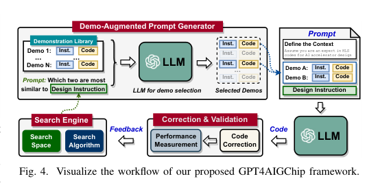
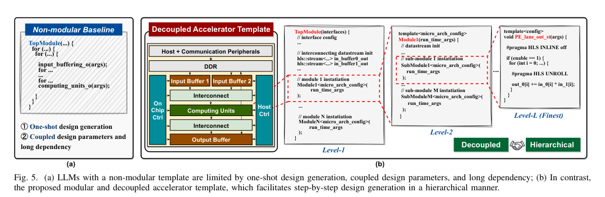

本报告由大模型自动生成，可能存在理解、归纳或数据转述错误；请以原论文为准。 GPT4AIGChip: Towards Next-Generation AI Accelerator Design Automation via Large Language ModelsYonggan Fu, Yongan Zhang, Zhongzhi Yu, Sixu Li, Zhifan Ye, Chaojian Li, Cheng Wan, Yingyan Lin · 2023 IEEE/ACM International Conference on Computer Aided Design (ICCAD) · 2023 · 原文 · PDF 报告模型：gemini-3.1-pro-preview / high 这篇文章探讨了如何利用大型语言模型（LLMs）通过自然语言指令来实现人工智能（AI）硬件加速器设计的自动化，提出并验证了首个名为 GPT4AIGChip 的设计自动化框架。以下是按论文逻辑结构进行的详细解读。 第一部分：研究背景与问题提出（Introduction）问题背景： 近年来，由深度神经网络（DNNs，具体定义原文未说明）驱动的人工智能（AI）取得了变革性进展，这对专用的 AI 硬件加速器提出了迫切需求。然而，为不同的 AI 工作负载设计专用的硬件加速器是一个极其耗时且高度依赖人力的过程。 现有的硬件设计探索和自动化工具（原文未提及 EDA 缩写及其具体定义）虽然能部分减轻工作量，但依然要求使用者具备深厚的硬件专业知识。例如，使用者通常需要编写高层次综合（High-Level Synthesis, HLS，具体定义原文未说明）代码。这种高昂的学习曲线在 AI 算法开发者和硬件加速器设计之间构筑了壁垒。 核心大意： 鉴于大型语言模型（如 GPT-4）在根据人类自然语言指令生成高质量内容方面展现出惊人的潜力，作者提出了本文的核心问题：我们能否利用 LLMs 的力量，让没有硬件背景的用户仅通过自然语言就能自动生成 AI 加速器的硬件代码？为了回答这个问题，作者首先评估了现有 LLMs 在硬件设计上的能力与局限，随后基于评估结果提出了 GPT4AIGChip 框架，实现了这一跨界设计过程。 第二部分：当前 LLMs 在 AI 加速器设计中的能力与局限（Where We Are）在构建自动化框架之前，作者首先对最先进的 LLMs（以 GPT-4 为例）在生成 HLS 代码时的表现进行了基准测试。作者要求 LLMs 根据广泛使用的 for 循环架构模板生成加速器代码，结果发现 LLMs 频繁生成无法综合（即无法被 EDA 工具转换为真实电路）或功能错误的代码。 发现的四大局限性：
闭源 LLMs 与微调开源 LLMs 的对比： 针对上述缺陷，一种直觉的解决方案是用标注好的 HLS 代码去微调（Finetune）开源 LLMs。作者收集了 7000 个 HLS 代码片段对 CodeGen（一种开源代码生成模型）进行了两阶段微调，并引入了一个评估指标 （其中 为尝试次数标量，取值范围原文未说明，单位：无量纲，原文未说明； 表示在 次尝试中成功编译的比例，单位：无量纲，原文未说明）。这里 指的是在 次代码生成尝试中成功编译的比例（在本文表格中，作者使用的是 ）。 实验（表 1）表明，未经微调的 CodeGen 成功率为 0%，微调后提升至 31%；但闭源且未经过专门硬件微调的强大模型 GPT-4 在零样本下就达到了 42%。这说明在硬件标注数据极其匮乏的当下，LLMs 自身的初始基础能力和逻辑推理能力，比对弱模型进行微调更为重要。 LLMs 具备的可利用能力： 作者发现，如果提供高质量的“演示”（Demonstrations，即指令+代码的配对示例，称为上下文学习 In-context learning），LLMs 能够推断出演示与用户新指令之间的差异，并修改设计以满足新要求。同时，当给出多个演示时，LLMs 甚至能进行逻辑推理，指出哪些演示与当前任务最相似。 第三部分：从评估中提取的设计指导原则（What We Can Learn）基于第二部分的失败教训与能力发现，作者提炼出利用 LLMs 自动化设计 AI 加速器的三个核心洞见（Insights），这直接构成了后续框架的理论基础：
第四部分：GPT4AIGChip 框架详解（The Proposed GPT4AIGChip Framework）本节是文章的核心，作者基于上述洞见，设计了首个由 LLM 驱动的 AI 加速器设计自动化框架 GPT4AIGChip。 框架的总体工作流（图 4）： 这是一个迭代优化的闭环系统，分为四个阶段： 
1. LLM 友好的硬件模板设计（应对长依赖问题）： 传统的加速器模板中，循环嵌套极深且参数互相耦合。作者提出了三个模板设计原则：高模块化（将大片代码切分为小块，适应 LLM 上下文长度限制）、解耦的模块设计（每个模块独立生成，拥有局部设置，互不干扰）以及深层次的树状设计结构（支持逐步生成）。 具体实现（图 5b）： 作者针对通用矩阵乘法（GEMM，具体定义原文未说明）设计了一个全新的微架构模板。每个硬件功能对应源代码中的一个独立函数实例化。模块之间不再通过全局循环变量强耦合，而是通过异步数据 FIFO（具体定义原文未说明）进行基于数据流的通信。 模板被拆分为： 
2. 演示增强型提示词生成器（应对领域知识匮乏问题）： 由于提示词长度受限，不能把所有 HLS 示例都塞给 LLM。作者利用 LLM 自身的语义理解能力，让它先比较当前“设计指令”与“演示库”中各个指令的相似度，挑选出最相似的 2 个演示，然后套入固定的提示词模板（包含身份设定、两个相似示例的指令与代码，以及当前任务指令）中。 演示库的构建要求： 指令与代码必须逐行映射（高度相关），且必须覆盖搜索空间中的各种参数变化（保证多样性）。这得益于前面解耦的模块化模板，使得构建这样庞大的演示库所需的人力大幅降低。 3. 跨层探索与搜索算法： 为了寻找最优的硬件参数，作者定义了以下 5 个维度的硬件设计空间：
搜索算法： 框架采用锦标赛选择（Tournament Selection，一种遗传算法）来搜索这个庞大的空间。 算法逻辑：首先初始化一个包含 （种群大小标量，单位：无量纲，原文未说明）个随机加速器设计实体 （加速器设计集合，单位：无量纲，原文未说明）的种群 （种群集合，单位：无量纲，原文未说明）。在每一次迭代中，从 中随机挑选一个固定大小的子集 （子集集合，单位：无量纲，原文未说明）。评估 中设计的硬件性能，表现最好的个体作为父代 （父代设计集合，单位：无量纲，原文未说明；下标 承载语义，原文未单独说明其具体定义，仅指代父代）。对父代进行变异（随机调整一个设计参数）或交叉（在两个父代间交换元素），生成新的子代个体 （子代设计集合，单位：无量纲，原文未说明；下标 承载语义，原文未单独说明其具体定义，仅指代子代）。将子代加入种群 ，同时淘汰 中存在时间最老的个体以保持种群规模 不变。循环直至达到最大周期，输出最优解（optimal solution）。 架构-EDA 协同与验证闭环： 这里明确体现了跨层优化的联系。生成的 HLS 代码（包含上述宏观架构参数）会经过三个阶段的验证：
第五部分：实验评估（Experimental Evaluation）实验设置： 默认 LLM 为 GPT-4。EDA 流程使用 Xilinx Vivado HLS，目标硬件验证平台为 ZCU104 FPGA 芯片。资源硬约束设定为 1024 个 DSP（数字信号处理器，digital signal processors，具体定义原文未说明）。评估任务为 6 种不同的神经网络和 2 种输入分辨率。 实验结果与分析：
第六、七、八部分：局限性、未来工作与结论（Limitations, Related Work & Conclusion）局限性与未来工作：
结论概括： 作为该领域的首创性工作，本文深入调查了 LLMs 在硬件设计中的潜力和局限性，并据此构建了 GPT4AIGChip 框架。通过“解耦硬件模板”、“上下文学习”与“遗传算法驱动的 EDA 物理反馈”三者深度结合，该框架首次证明了：依靠自然语言指令和大型语言模型，完全有可能自动探索并生成媲美人类专家水平的 AI 硬件加速器。 贯穿全文的主线总结这篇文章的发展脉络非常清晰： 文章最初遇到的问题是，AI 算法演进极快，但为其定制硬件加速器的过程却因为需要编写底层的 HLS 代码而变得门槛极高、耗时费力。 为了解决这个问题，作者尝试直接让 LLM 充当硬件工程师，却在初步评估中发现 LLM 根本记不住长代码的前后约束，也搞不懂物理硬件中为了防冲突而必须采用的复杂机制（如缓存分区和寄存器过渡）。 由于缺乏用于微调大模型的大规模硬件代码数据，作者转换思路，转而改造硬件架构体系去适应 LLM 的缺点：他们设计了一套高度解耦、依靠异步 FIFO 队列通信的新型硬件模板，把复杂的芯片切成 LLM 能够一口吞下的“小积木”；同时利用 LLM 优秀的逻辑推理能力，通过搜索最相似的示例代码（演示增强）来现场教 LLM 怎么写代码。 最后，这些通过自然语言组装起来的模块，被送入真实的工业级 EDA 工具中进行物理综合。EDA 综合出的延迟和面积数据，作为一把冷酷的标尺，反向指导框架中的遗传算法去筛选出最优的硬件组合。 最终，这套方法成功突破了自然语言和复杂数字逻辑电路之间的壁垒，自动设计出的芯片性能匹敌了人类专家。需要注意的是，本研究最关键的局限在于其高度依赖人工预先准备的“高质量代码演示库”，且尚未实现模块组装和整片验证的完全自动化。因此，这一结论目前仅证明了“LLM 可以在局部核心模块生成上取代初级硬件工程师并辅助架构探索”，但绝不能过度推广为“LLM 已经能够一键全自动生成可流片的最终 AI 芯片”。 |